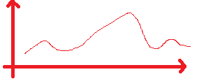

Урок 2. Информация, ее свойства и классификация
Перечень рассматриваемых вопросов:
- Познакомиться с понятием информации.
- Научиться различать виды информации по способу восприятия человеком, по способу представления, по назначению.
- Научиться определять качественные характеристики информации – её свойства.
Тезаурус:
Полезность информации определяется субъектом, получившим информацию в зависимости от объёма возможностей её использования.
Ценность информации – свойство, определяемое её пригодностью к практическому использованию в различных областях целенаправленной деятельности.
Цифровизация экономики – это переход всех сфер традиционной экономики в электронный вид при помощи компьютерных технологий.
Специальная информация – сведения, которые могут быть непонятны основной массе людей, но необходимы и понятны узкой социальной группе специалистов, которые эту информацию используют.
Массовая информация – сведения, понятные большей части населения.
Личная информаци – сведения о каком-либо человеке, определяющие социальное положение и типы социальных взаимодействий.
Секретная информация – сведения для узкого круга, передаваемые по закрытым (защищённым) каналам и не предназначенные для посторонних.
Теоретический материал для самостоятельного изучения
На прошлом уроке мы выяснили, что информатика – это наука, изучающая законы и методы работы с информацией. А что же такое информация? Это и предстоит выяснить сегодня на уроке.
Источниками информации для нас являются: радио, телевидение, другие люди, книги.
Информация для человека – это содержание получаемых им сообщений, расширяющее знания человека об окружающем мире и протекающих в нём процессах.
Каждый материальный объект, с которым происходят изменения, становится источником информации или об окружающей среде, либо о происходящих в этом объекте процессах.
Информация доставляется к нам с помощью сигналов различного типа. Они могут быть: световые, тепловые, звуковые, механические, электрические и другие.
Например, пылающий костёр одновременно может нести как световой, так и тепловой сигнал.
СИГНАЛ:
Непрерывный
Дискретный
Непрерывный сигнал принимает бесконечное множество значений из некоторого диапазона. Между значениями, которые он принимает, нет разрывов.
Например: игра на скрипке.
Схематично непрерывный сигнал можно представить в виде непрерывной кривой линии:

Сигнал называется дискретным, если его параметр может принимать конечное число значений в пределах некоторого интервала.
Например: текст книги, время на часах.
Информация поступает к человеку в виде сигналов внешнего мира. Но, прежде, чем попасть в мозг для анализа и осмысления, эти сигналы воспринимаются нашими органами чувств. В соответствии со способом восприятия различают следующие виды информации:
визуальная (получена с помощью органов зрения);
аудиальная (получена с помощью органов слуха);
обонятельная (получена с помощью органов обоняния);
вкусовая (получена с помощью вкусовых рецепторов языка);
тактильная (получена с помощью органов осязания).
По форме представления:
Текстовая – передаваемая в виде символов, предназначенных обозначать лексемы языка.
Числовая – представлена в виде цифр и знаков, обозначающих математические действия.
Графическая – представлена в виде изображений, предметов, графиков.
Звуковая – передаваемая устная или в виде записи и передачи лексем языка аудиальным путём.
По назначению:
массовая информация – сведения, понятные большей части населения;
специальная информация – сведения, которые могут быть не понятны основной массе людей, но необходимы и понятны узкой социальной группе специалистов), которые эту информацию используют;
секретная информация – сведения для узкого круга, передаваемые по закрытым (защищённым) каналам и не предназначенные для посторонних;
личная информация (приватная информация) – сведения о каком-либо человеке, определяющие социальное положение и типы социальных взаимодействий;
общественно значимая информация – это информация, которая удовлетворяет потребности граждан в знании и понимании того, что происходит в государстве.
Чтобы комфортно жить в современном, быстро меняющемся мире и принимать правильные решения, человеку нужна информация, которой присущи определённые свойства:
- объективность (т.е. независимость от чужого мнения): например, заявление: «Гора низкая» необъективно;
- достоверность (т.е. информация должна быть правдивой, не должна искажаться): например, достоверно известно, что Земля вращается вокруг Солнца;
- полнота (т.к. неполная информация может ввести в заблуждение): например: cумма углов треугольника равна 180 градусов, но только для прямоугольной системы координат на плоскости;
- актуальность (устаревшая или преждевременная информация является неактуальной): например, оповещение на мобильный телефон: «Деньги на вашем счету заканчиваются» – актуальна, если прочитана вовремя;
- полезность: например, голосовое объявление на вокзале: «Отправление поезда через 5 минут».